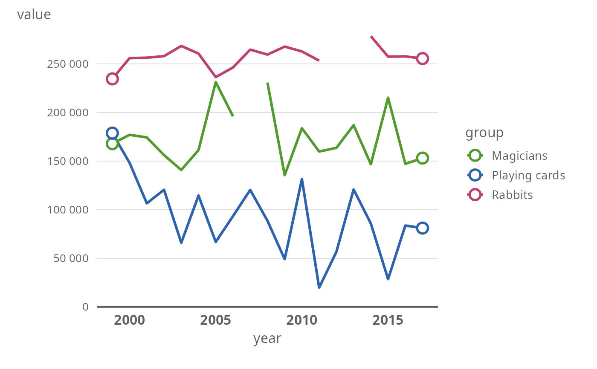
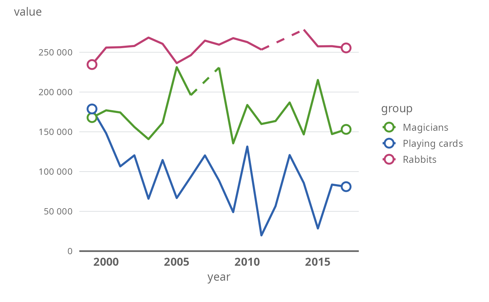
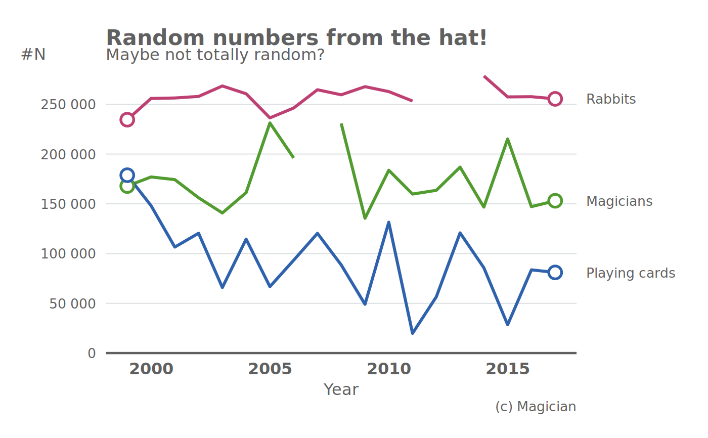

plot_line_thl.RdMake a line plot
plot_line_thl(
data,
xvar,
yvar,
groupvar = NULL,
linewidth = 3,
colors = palette_thl("line"),
lang = "fi",
plot.missing = FALSE,
linetype.missing = 2,
marked.treshold = 10,
breaks.x = waiver(),
breaks.y = waiver_thl(),
y.limits = c(0, NA),
panels = FALSE,
nrow.panels = 1,
labels.end = FALSE
)a data frame
variable to be plotted on the x-axis.
variable to be plotted on the y-axis.
grouping variable. Defaults to NULL (no grouping).
width of the line in PostScript points, defaults to 3.
Colors to be used.
Defaults to THL qualitative color palette for line plots.
(see palette_thl).
language options for the y-axis labels.
Defines the style of big marks and decimal marks
(see format_thl)
TRUE/FALSE, should the missing values be linearly
interpolated and plotted with dotted line.
(see thlNaLines for more details)
linetype for missing observations
The maximum amount of data points plotted. A dot (default 10). If the number of data points is greater than this treshold, dots are plotted only at the beginning and the end of the line. Setting this to NULL will omit all dots.
A character vector defining the x-axis breaks.
A character vector defining the y-axis breaks.
limits for the y-axis
Should multiple graphs be plotted in separate panels?
If TRUE, the panels are based on the grouping variable defined
by the groupvar -argument.
In how many rows should the panels be plotted?
Whether the line labels should be displayed at the right end of each line instead of legend.
A ggplot -object.
year <- 1999:2017
set.seed(1234)
value1 <- jitter(c(250:(250+length(year)-1)), factor = 100)*1000
value2 <- jitter(c(200:(200-length(year)+1)), factor = 300)*1000
value3 <- jitter(c(100:(100-length(year)+1)), factor = 400)*1000
dat <- data.frame(year = rep(year,3), value = c(value1, value2, value3),
group = factor(rep(c("Rabbits", "Magicians", "Playing cards"),
each = length(year))))
dat$value <- with(dat, ifelse(year %in% c(2012,2013) & group == "Rabbits", NA, value))
dat$value <- with(dat, ifelse(year == 2007 & group == "Magicians", NA, value))
plot_line_thl(data = dat, xvar = "year", yvar = "value", groupvar = "group")

plot_line_thl(data = dat, xvar = "year", yvar = "value", groupvar = "group",
plot.missing = TRUE)

plot_line_thl(data = dat, xvar = "year", yvar = "value", groupvar = "group",
labels.end = TRUE) +
labs(title = "Random numbers from the hat!",
caption = "(c) Magician",
subtitle = "Maybe not totally random?",
y = "#N", x = "Year")
